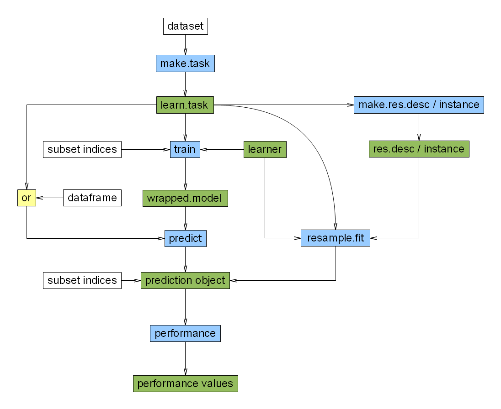

Training a learner¶
“Training” a learner just means fitting a model to a given data set. We are not concerned with the specifics of the fitting process as such here – this will be taken care of by the underlying R methods that this package integrates. Rather more important is that training and all subsequent operations can be performed by using a unified interface.
This is in this case achieved by calling the function train, passing it a learner and a machine learning task. The classification or regression method is specified by its name as a string or by a Learner object. While the former is maybe more covenient, the latter allows for more flexibility, for example it permits setting the hyperparameters of the learner before training. Optionally, only a subset of the data, specified by an index set, is used to train the learner. This set is passed using the subset argument of train.
The return value is always an object of class Model which wraps the concrete model of the used R classification or regression method. It can subsequently be used to perform a prediction for new observations.

Classification example¶
Let’s have a look at the iris data set.
> library("mlr")
> ct <- makeClassifTask(data = iris, target = "Species")
> m <- train("classif.rpart", ct)
> m <- train("classif.rpart", ct, subset = seq(from = 1, to = 150,
+ by = 2))
> l <- makeLearner("classif.rpart", minsplit = 7, cp = 0.03)
> m <- train(l, ct, subset = seq(from = 1, to = 150, by = 2))
> m
Learner model for id=classif.rpart class=classif.rpart
Trained on obs: 75
Used features: 4
Hyperparameters: minsplit=7,cp=0.03
> l@par.vals
$minsplit
[1] 7
$cp
[1] 0.03
> m@learner@par.vals
$minsplit
[1] 7
$cp
[1] 0.03
> m@subset
[1] 1 3 5 7 9 11 13 15 17 19 21 23 25 27 29 31 33 35 37
[20] 39 41 43 45 47 49 51 53 55 57 59 61 63 65 67 69 71 73 75
[39] 77 79 81 83 85 87 89 91 93 95 97 99 101 103 105 107 109 111 113
[58] 115 117 119 121 123 125 127 129 131 133 135 137 139 141 143 145 147 149
> m@learner.model
n= 75
node), split, n, loss, yval, (yprob)
* denotes terminal node
1) root 75 50 setosa (0.3333333 0.3333333 0.3333333)
2) Petal.Length< 2.45 25 0 setosa (1.0000000 0.0000000 0.0000000) *
3) Petal.Length>=2.45 50 25 versicolor (0.0000000 0.5000000 0.5000000)
6) Petal.Width< 1.65 25 1 versicolor (0.0000000 0.9600000 0.0400000) *
7) Petal.Width>=1.65 25 1 virginica (0.0000000 0.0400000 0.9600000) *
Regression example¶
As regression example we use the BostonHousing data set.
> library("mlbench")
> data(BostonHousing)
> rt <- makeRegrTask(data = BostonHousing, target = "medv")
> m <- train("regr.gbm", rt)
Loaded gbm 1.6-3.1
> m <- train("regr.gbm", rt, subset = seq(1, 506, 2))
> l <- makeLearner("regr.gbm", n.trees = 500, distribution = "laplace",
+ interaction.depth = 3)
> m <- train(l, rt, subset = seq(1, 506, 2))
> m
Learner model for id=regr.gbm class=regr.gbm
Trained on obs: 253
Used features: 13
Hyperparameters: distribution=laplace,n.trees=500,interaction.depth=3